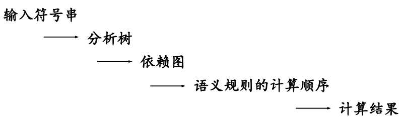

语法制导翻译技术
语法制导翻译的整体思路：
- 根据翻译目标确定每个产生式的语义
- 根据产生式的含义确定每个符号的含义
- 将这些语义以属性的形式附加到相应的文法符号上，将语义和语言结构联系起来
- 根据产生式的语义给出符号属性的求值规则形成语法制导定义
翻译目标决定了产生式的含义，决定文法符号应该具有的属性，也决定了产生式的语义规则。
翻译目标决定语义规则：翻译目标决定产生式的含义，决定文法符号应该具有的属性，也决定了产生式的语义规则。
翻译目标可以是：
- 生成代码
- 对输入符号串进行解释执行
- 向符号表中存放信息
- 给出错误信息
翻译结果依赖于语义规则：使用语义规则进行计算所得到的结果就是对输入符号串进行翻译的结果。
语法制导翻译的一般步骤是：

语义规则的执行时机：
语法制导定义及翻译方法
语法制导定义
对于上下文无关文法的推广。
每个文法符号都可以拥有一个属性集，其中可以包括两类属性：
-
综合属性
左部符号的综合属性是从该产生式的右部文法符号的属性值计算处理的
在分析树中，一个内部结点的综合属性是从其子节点的属性值计算出来的
-
继承属性
对于每一个文法产生式，都有与之相联系的一组语义规则，其形式为
其中是一个函数，而且：
如果b是A的一个综合属性，则是产生式右部文法符号的属性或者是A的继承属性；如果b是右部某个文法符号的继承属性，那么是A或者产生式右部任何文法符号的属性。
在一般情况下，语义规则函数可以写成表达式的形式： 。但是在某些特定的情况下，一个语义规则的目的就是完成一个特定的动作，例如打印一个值或者向符号表中插入一条记录。这样的属性称为虚拟综合属性，写成过程调用或者是程序段的形式，例如print(E.val)。
依赖图
分析树中，结点的继承属性和综合属性之间的相互依赖关系可以由依赖图表示。在依赖图中，
- 为每个属性设置一个结点
- 如果属性b依赖于属性c，那么从属性c的结点由一条有向边连接到属性b的结点。

计算次序
依赖图的任何拓扑排序给出了分析树中结点的语义规则计算的有效顺序。
综上，语法制导翻译过程为：
- 最基本的文法用于建立输入符号串的分析树
- 为分析树构造依赖图
- 对依赖图进行拓扑排序
- 从这个序列得到语义规则的计算顺序
- 照此计算顺序进行求值，得到对于输入符号串的求值。
S属性定义和L属性定义
S属性定义：仅涉及到综合属性的语法制导定义。
L属性定义：一个语法制导定义如果满足每个产生式对应的每条语义规则计算的属性都是：
- A的综合属性
- 的继承属性，且该继承属性仅继承于A的继承属性或者产生式中左边的符号属性
按照定义，每个S属性定义都是L属性定义。
L属性定义的属性都可以用深度优先遍历的顺序计算：
- 在进入结点前，计算继承属性
- 在从结点返回时，计算他的综合属性
翻译方案
上下文无关文法的一种便于翻译的书写形式。
- 属性和文法符号相对应
- 语义动作写在花括号中，并插入到产生式右部某个合适的位置上
- 给出了使用语义规则进行属性计算的顺序
- 分析过程中翻译的注释

深度优先遍历树中的结点，执行动作，打印出
95-2+。
翻译方案的设计：
-
对于S属性定义：
为每一个语义规则建立一个包含赋值的动作，把这个动作放在相应的产生式右边末尾。
-
对于L属性定义：
左部符号的综合属性只有在它所引用的所有属性都计算出来之后才能计算，因此这种属性的计算动作要放在产生式的末尾。
右部符号的继承属性必须在这个符号以前的动作中计算出来，因此计算该继承属性的动作必须出现在相应文法符号之前。
S-属性定义的自底向上翻译
为表达式构造语法树的语法制导定义
S-属性定义的自底向上实现
基于LR分析方法。
在LR分析方法中，分析程序使用栈存放已经分析过的子树的信息。因此，在分析栈中增加一个域保存综合属性值。
修改分析程序：
-
对于终结符号：
综合属性值由词法分析程序产生。
当分析程序执行移进操作时，属性值随着状态符号一起入栈。
-
为每个语义规则编写一段代码计算属性值
-
对于每个产生式:
在进行归约动作时执行属性值的计算代码。将右部符号的相应状态和属性出栈，左部符号的相应状态和属性入栈。
L-属性定义的自底向上翻译
在自底向上的分析过程实现L属性定义的翻译。
- 可以实现任何基于LL(1)文法的L属性定义
- 可以实现许多基于LR(1)文法的L属性定义
下面介绍四种实现方法。
移走翻译方案中嵌入的语义规则
自底向上地处理继承属性。对翻译方案进行等价变换，使所有嵌入的动作都出现在产生式的右端末尾。
方法：
- 在基础文法中引入新的产生式，形如，即只生成空串
- 将称为标记非终结符号，用来代替嵌入在产生式中的动作
- 把被替代的动作放在产生式的末尾
例如对于下列文法进行等价变换： 引入非终结符号和，形成新的翻译方案 可以画出等价变化之后的分析树：

直接使用分析栈中的继承属性
利用复制规则传递继承属性。
变换继承属性的计算规则
当且仅当属性值在栈中存放的位置可以预测时，可以从栈中取得继承属性。
例如对于语法制导定义：

当使用进行归约时，属性可能出现在top - 1和top - 2中。
因此使用模拟继承属性的计算：
引入标记非终结符号，

这样使用进行归约时，属性一直在top - 1的位置上。